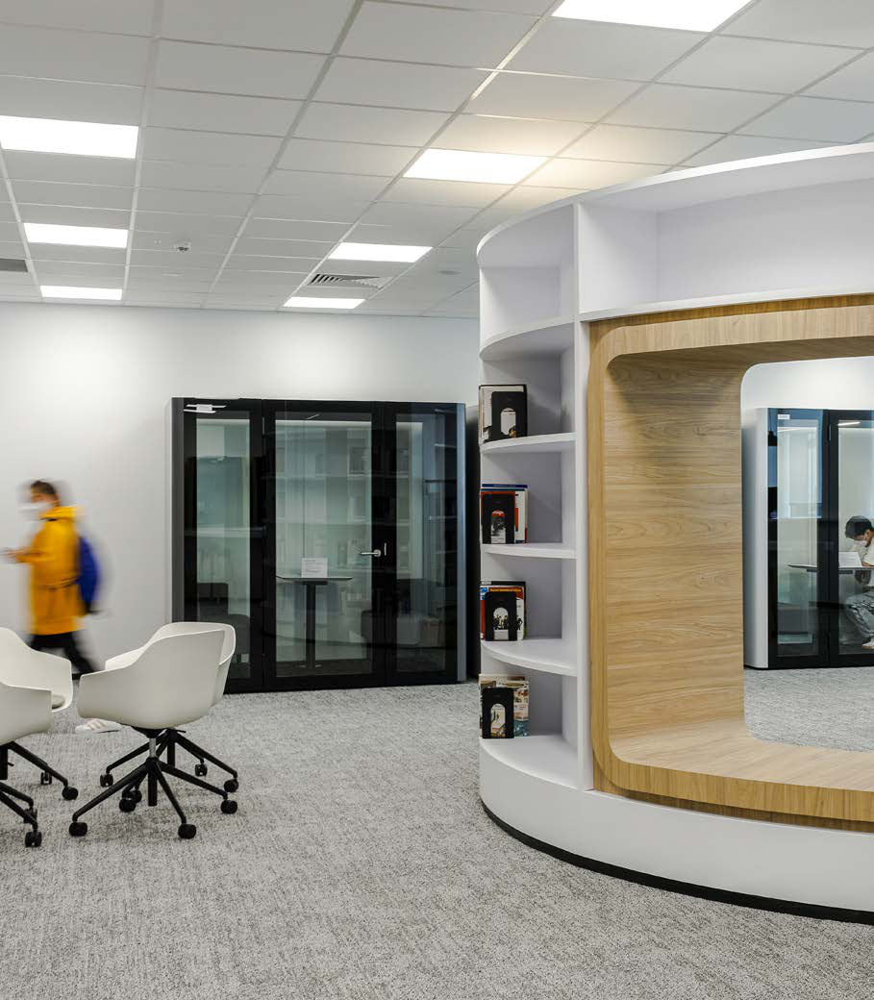
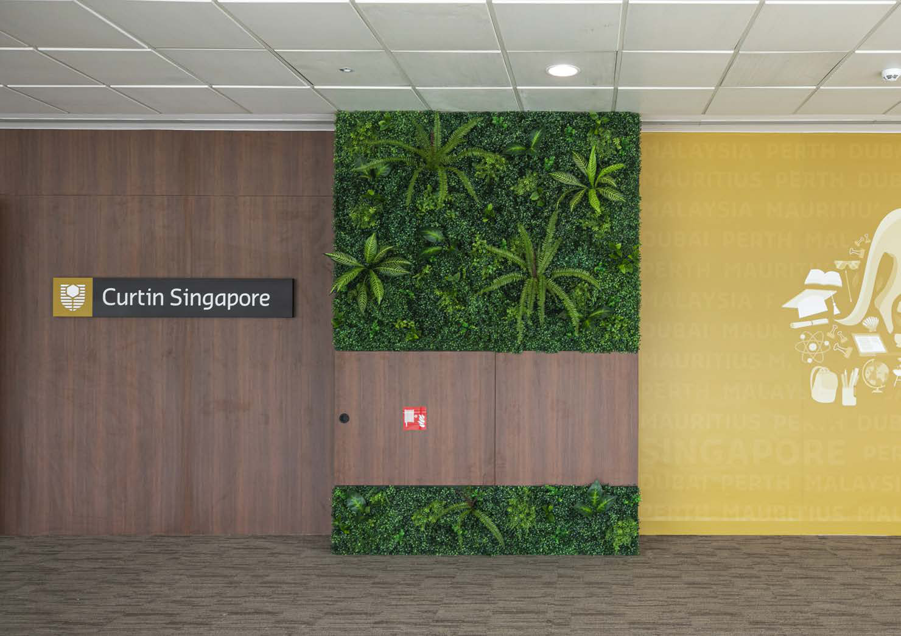
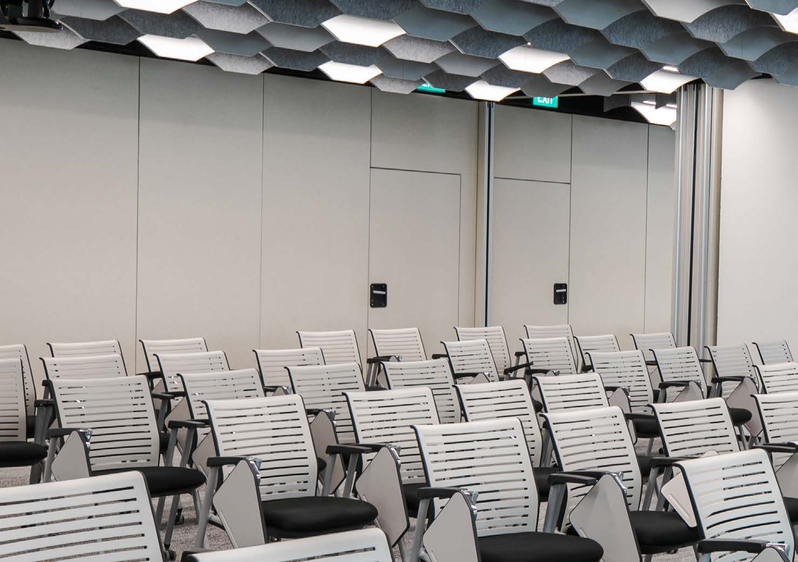

On weekday mornings at Singapore Science Park 2, the Alpha building fills with a tide of students. Card readers blink, screens wake, and a soft breath of cooled air follows people into classrooms.
It looks effortless. It isn’t. Beneath the finishes and furniture sits the hidden architecture of a modern campus: power that never stutters, air that stays clean and comfortable in the tropics, water where it’s needed, and protection that’s felt more than seen.
When Curtin University chose to relocate its Singapore campus into 55,543 square feet at Alpha, the brief was simple to say and hard to do: create a reliable, future-ready environment for teaching, research and industry engagement. Mint Building Services took the full M&E scope, electrical distribution, ACMV, plumbing and fire protection, and made it work in a live, tech-rich setting.


Phase 1 reached completion in May 2022. The fit-out brought 37 learning spaces online alongside three computer labs and two clinical skills labs, each with AV at its core.
Mint engineered electrical backbones to handle device-heavy teaching, balanced loads across the campus, and coordinated with AV to ensure clean power to sensitive kit.
On the environmental side, ACMV design focused on thermal comfort and indoor air quality, with zoning that matched real teaching patterns and duct routes that preserved ceiling heights. Fire systems and plumbing were laid out with maintenance in mind, because a campus is only as good as it is serviceable.
